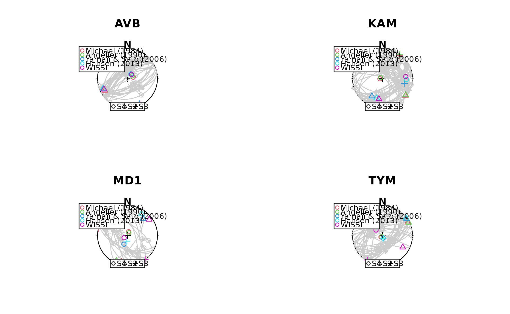

Convenient function for linear and direction inversion of fault-slip data to derive the reduced stress tensor.
Usage
slip_inversion(x, method = c("michael", "angelier", "hansen"), ...)Arguments
- x
"Fault"object where the rows are the observations, and the columns the coordinates.- method
character. The inversion algorithm, one of
"michael"(the default) for a bootstrapped linear inversion after Micheal (1984),"angelier"for an iterative direct inversion after Angelier (1990) and Mostafa (2005), and"hansen"for direct inversion using the 9d parameter space after Hansen (2013).- ...
arguments passed to
slip_inversion_angelier()orslip_inversion_michael()
Value
a named list with the following components:
stress_tensor"ellipsoid"object. Best-fit devitoric stress tensor in input coordinate frameprincipal_axes"Line"objects. Orientation of the principal stress axes as unit vectors (max to min)tensor_paramsthe four tensor parameters (Eq. 4.87)
principal_valseigenvalues of the stress tensor (\(\sigma_1 >= \sigma_2 >= \sigma_3\))
stress_shapelist Stress shape ratio. See
stress_shape().misfitlist. Misfit parameters. See
slip_inversion_misfit().SHmaxnumeric. Direction of maximum horizontal stress (in degrees)
tau_meannumeric. Average resolved shear stress on each plane. Should be close to 1.
stress_componentsmatrix. The resolved shear and normal stresses, the slip and dilation tendency on each plane. See
tau2shearnorm()andtau2tendency().n_iternumber of Mostafa iterations performed
References
Angelier, J. (1990). Inversion of field data in fault tectonics to obtain the regional stress—III. A new rapid direct inversion method by analytical means. Geophys. J. Int, 103, 363–376. https://doi.org/10.1111/j.1365-246X.1990.tb01777.x
Hansen, J. A. (2013). Direct inversion of stress, strain or strain rate including vorticity: A linear method of homogenous fault-slip data inversion independent of adopted hypothesis. Journal of Structural Geology, 51, 3–13. https://doi.org/10.1016/j.jsg.2013.03.014
Michael, A. J. (1984). Determination of stress from slip data: Faults and folds. Journal of Geophysical Research: Solid Earth, 89(B13), 11517–11526. https://doi.org/10.1029/JB089iB13p11517
See also
Other stress-inversion:
Fault_PT(),
slip_inversion_angelier(),
slip_inversion_hansen(),
slip_inversion_michael(),
slip_inversion_simple()
Examples
set.seed(20250411)
# Use Angelier examples
par(mfrow = c(1, length(angelier1990)))
invisible(lapply(angelier1990, function(x){
# Inversion after Michael (1984)
res_michael <- slip_inversion(x, method = "michael", n_iter = 100, n = 100, res = 100)
# Inversion after Angelier (1990)
res_angelier <- slip_inversion(x, method = "angelier")
#res_hansen <- slip_inversion(x, method = "hansen")
stereoplot(guides = FALSE)
fault_plot(x, col = "gray80")
points(res_michael$principal_axes, pch = 3, col = 2:4)
points(res_angelier$principal_axes, pch = 2, col = 2:4)
#points(res_hansen$nine$principal_axes, pch = 1, col = 2:4)
legend("topleft", col = 1, legend = c("Michael (1984)", "Angelier (1990)", "Hansen (2013)"), pch = c(3, 2, 1))
}))
